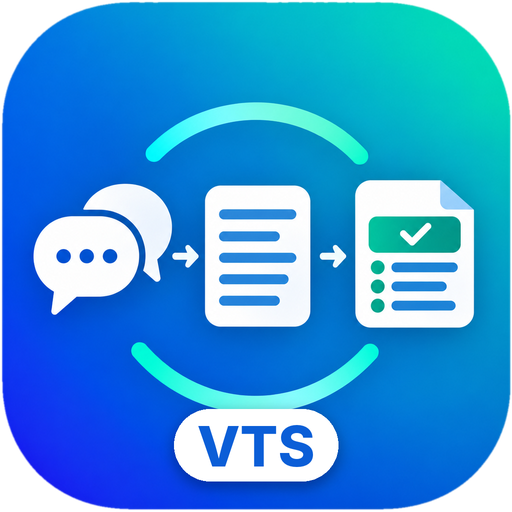

Appuyez sur le micro pour commencer la transcription.
Créez une clé sur console.anthropic.com (facturation à l'usage, quelques centimes par réunion). La clé reste sur cet appareil. Quand vous cliquez sur « Rédiger avec Claude », la transcription est envoyée à Anthropic pour être traitée.
0 / 300
La retranscription relit le fichier en temps réel : elle dure à peu près aussi longtemps que l'enregistrement. Le texte obtenu peut ensuite devenir un compte-rendu.